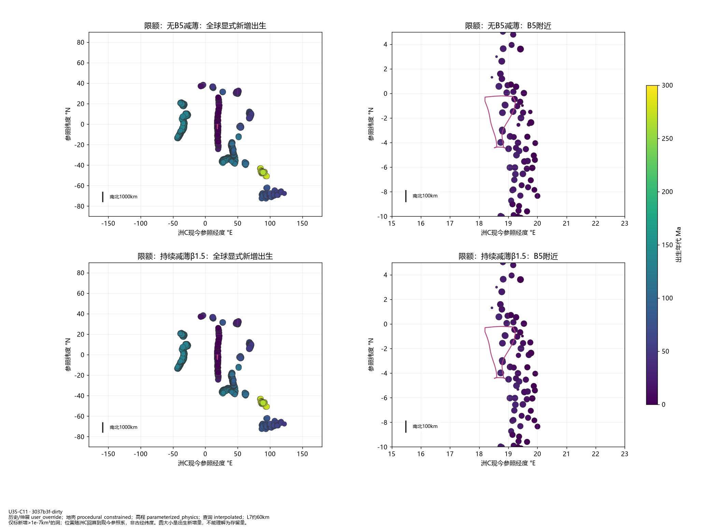
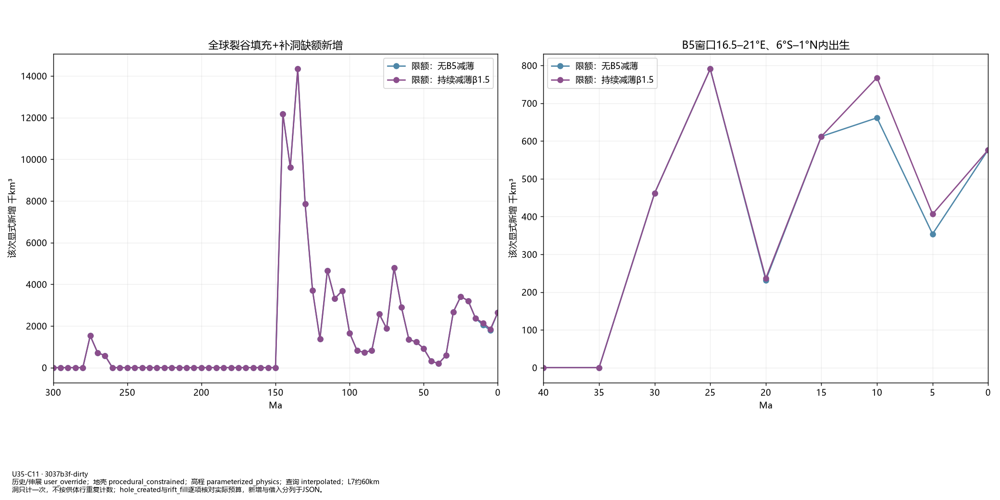
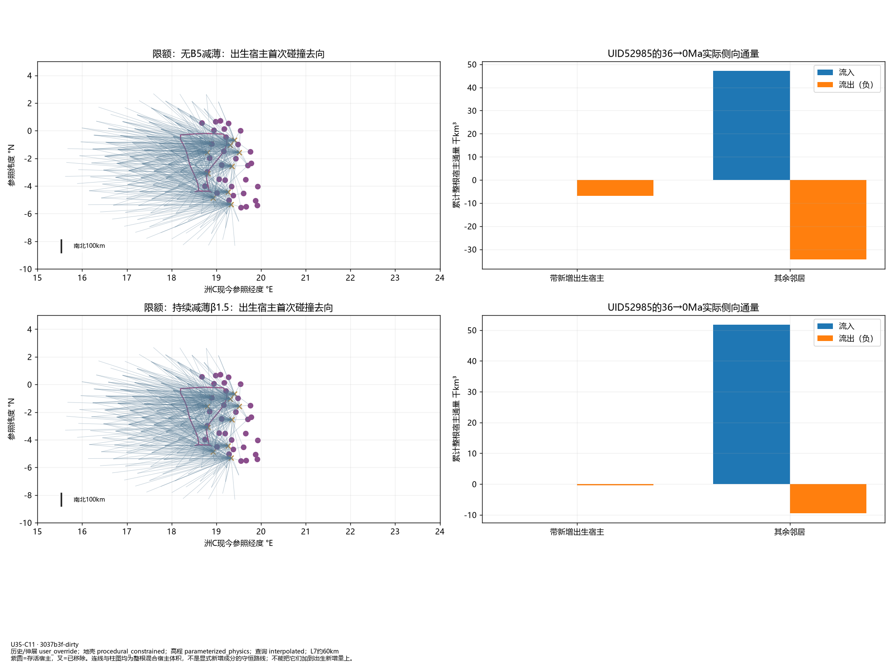
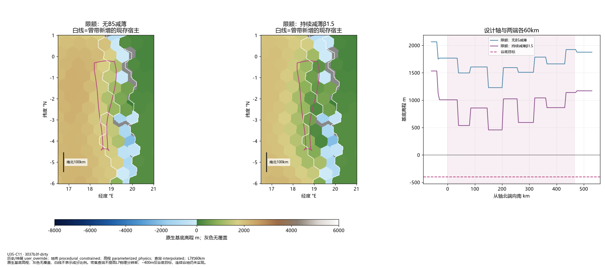
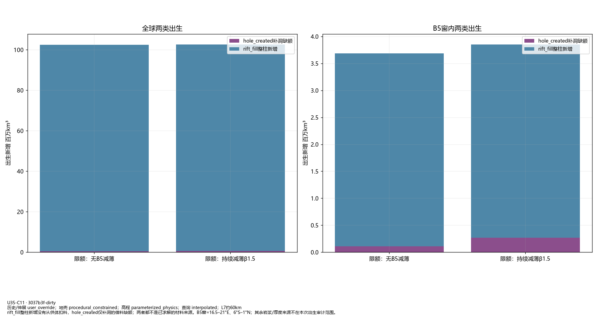

U35-C11：补洞出生与宿主去向
只读复跑C10，核对rift_fill整柱新增与hole_created补洞缺额，没有地形修正。出生新增量、后续混合宿主体积、成分存留必须区分；未求解成分守恒示踪。
66_hole_birth_locations.png

67_hole_birth_time_and_budget.png

68_birth_host_fate_and_flow.png

69_B5_current_hosts_and_axis.png

70_two_birth_sources.png

baseline标准图与指标
progressive标准图与指标